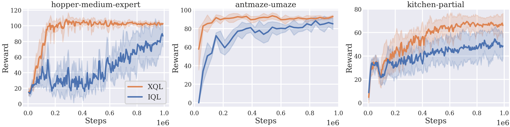

Extreme Q-Learning: MaxEnt RL without Entropy
|
|
|
|
|
Paper |
Code |
|
|
|
TLDR: A novel
framework
for
Q-learning that models the maximal
soft-values without needing to sample from a policy.
|
Abstract
Modern Deep Reinforcement Learning (RL) algorithms require estimates of the maximal Q-value, which are difficult
to
compute in continuous domains with an infinite number of possible actions. In this work, we introduce a new
update
rule for online and offline RL which directly models the maximal value using Extreme Value Theory (EVT), drawing
inspiration from Economics. By doing so, we avoid computing Q-values using out-of-distribution actions which is
often a substantial source of error. Our key insight is to introduce an objective that directly estimates the
optimal soft-value functions (LogSumExp) in the maximum entropy RL setting without needing to sample from a
policy.
Using EVT, we derive our Extreme Q-Learning (XQL) framework
and consequently online and, for the first
time,
offline MaxEnt Q-learning algorithms, that do not explicitly require access to a policy or its
entropy.
Our method obtains consistently strong performance in the D4RL benchmark, outperforming prior works by
10+ points on some
tasks while offering moderate improvements over SAC and TD3 on online DM Control tasks.
Key Idea: Gumbel Regression
|
|
TLDR: The core of our approach is fitting Gumbel
distribution \(\mathcal{G}(\mu, \beta)\) to the data to
introduce Gumbel regression (or Extremal regression), a new technique which
models the
extreme values of a distribution. |
For a temperature \(\beta\), Gumbel regression estimates the operator \(\beta \log \mathbb{E}[e^{X/\beta}] \)
or the Log-Partition function over samples drawn from a distribution \(X\). This is a central quantity of
interest in
Statistics as well as Physical Sciences, and it's accurate calculation has important applications in
Probabilistic Modeling, Bayesian Learning and Information Theory, such as in calculating maginal
distributions.
Nevertheless, it is very difficult to estimate in continuous spaces and usually assumed as an intractable
quantity. This has led to a host of variational inference methods such as VAEs, that use approximations to
side-step calculating it.
Gumbel Regression enables for the first time, exact estimation of the Log-Partition function by using
simple
gradient descent.
By controlling the temperature \(\beta\), Gumbel regression interpolates between the
the max (\(\beta=0\)) and the mean (\(\beta=\infty\)) of a distribution \(X\), and provides a robust
estimator for the extremal values of a distribution. Finally, Gumbel Regression admits to tight PAC
learning bounds
and has a bound approximation error on a finite dataset (Section 3 of the paper).
Approach
Our Gumbel regression loss function can be used to directly fit
the Log-Sum-Exp of the Q-values, yielding the soft-optimal value function \(V^* = LogSumExp(Q)\). Then,
we can use
Q-iteration even in high-dimensional continuous action spaces to find the optimal MaxEnt policy. This
general algorithm
works well in both
online, and offline settings.
For online RL, it can be used to extend existing algorithms like SAC and
TD3, with
moderate
performance
gains. On offline RL, it outperforms existing approaches, and obtains SOTA on D4RL benchmarks. Below we provide
a
high-level overview:

|
Offline Results
|

|
|
(Above) XQL reaching state of the art results on the Offline D4RL
Benchmark
|
 |
 |
|
XQL on Franka Kitchen
|
IQL on Franka Kitchen
|
Online Results
|
|
|
X-TD3 shows moderate gains on DM Control Tasks compared to standard TD3.
|
 |
 |
|
X-TD3 on Quadruped Run (Reward 437)
|
TD3 on Quadruped Run (Reward 293)
|
 |
 |
|
X-TD3 on Hopper Hop (Reward 71)
|
TD3 on Hopper Hop (Reward 20)
|
Citation
@article{
garg2022extreme,
title={Extreme Q-Learning: MaxEnt Reinforcement Learning Without Entropy},
url = {https://arxiv.org/abs/2301.02328},
author = {Garg, Divyansh and Hejna, Joey and Geist, Matthieu and Ermon, Stefano},
publisher = {arXiv},
year = {2023},
}